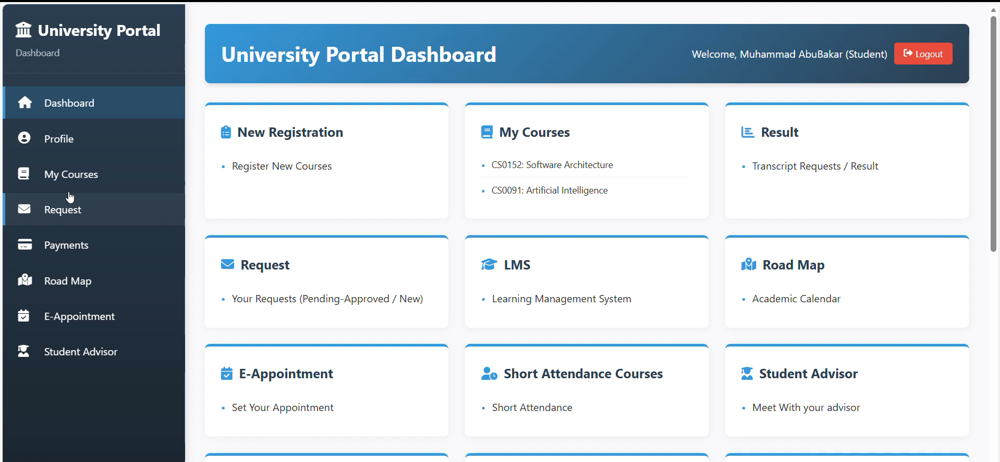
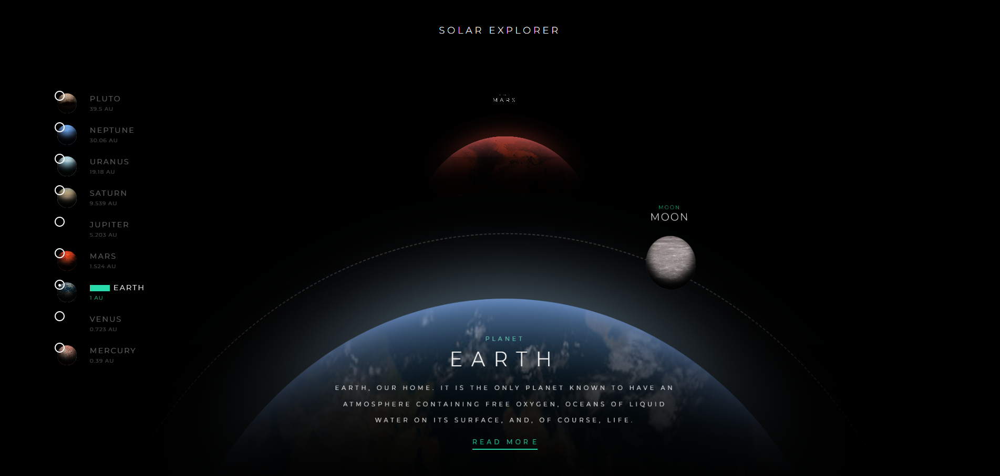

Recent Projects

Library System
MERN stack application with authentication and role-based access.
React.js, MongoDB, Express.js, Node.js, REST APIs
View Project
Employees Contacts App
Contact management system with secure authentication.
React.js, Node.js, MongoDB, REST APIs
View Project
University Portal & LMS
Complete LMS portal with frontend & backend integration.
HTML, CSS, JavaScript, Node.js, MySQL
View Project
Solar Planet System
Interactive solar system simulation with animations.
HTML, CSS, JavaScript
View Project

Impossible Light Bulb
Interactive light bulb simulation with physics-based animations.
HTML, CSS, JavaScript
View Project